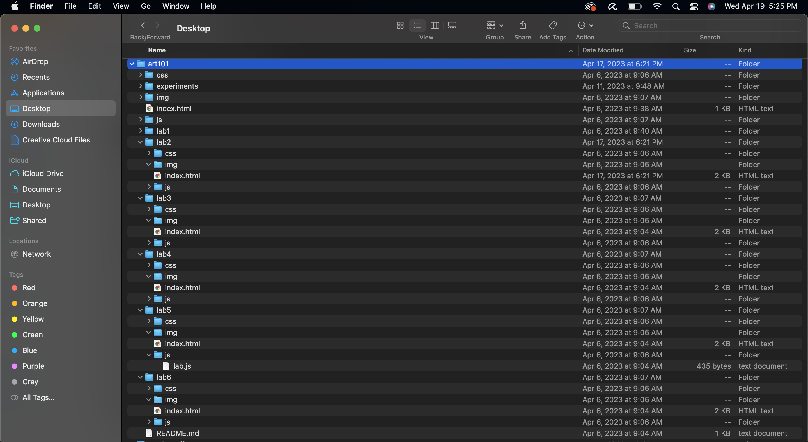

Lab 3 - File Structure & Transfer
Challenge
The point of the challenge was to create a local file structure, and add a index.html file onto my website.
Problems
The only problem I had come up with was trying to structure the different image folders so that it wouldnt give me errors. Besides that it whent ok.
Reflection
I didnt put a whole lot of time into this lab because I was already familiar withh vscode. I did do a little excersice of me trying to replicate the structure until I understood how each part plays into the lab.
Results
This is the results, basiaclly the same thing you are looking at while on my website!
My local art101 file on my computer